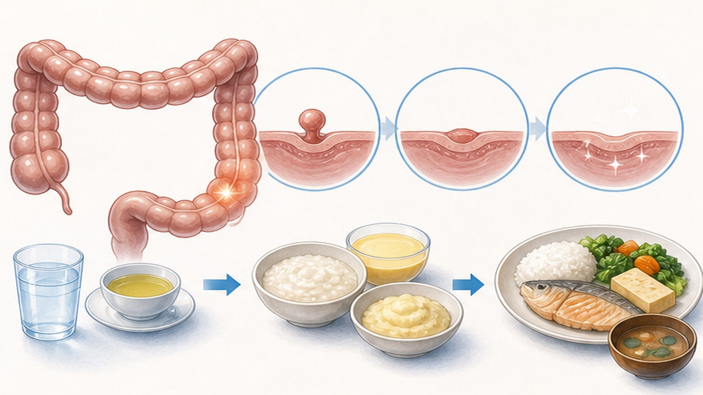
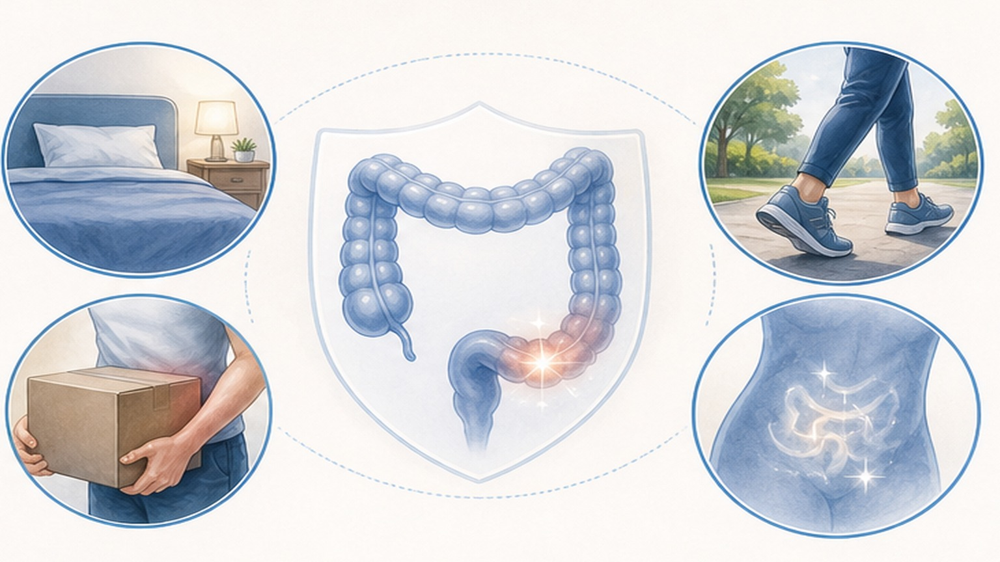
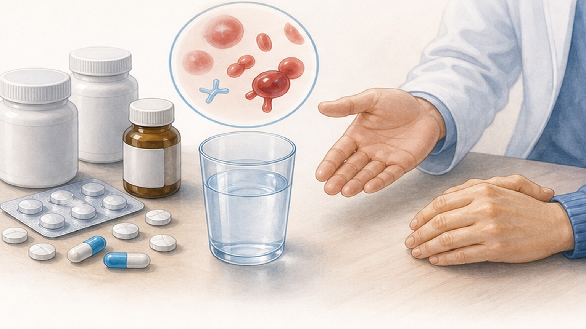
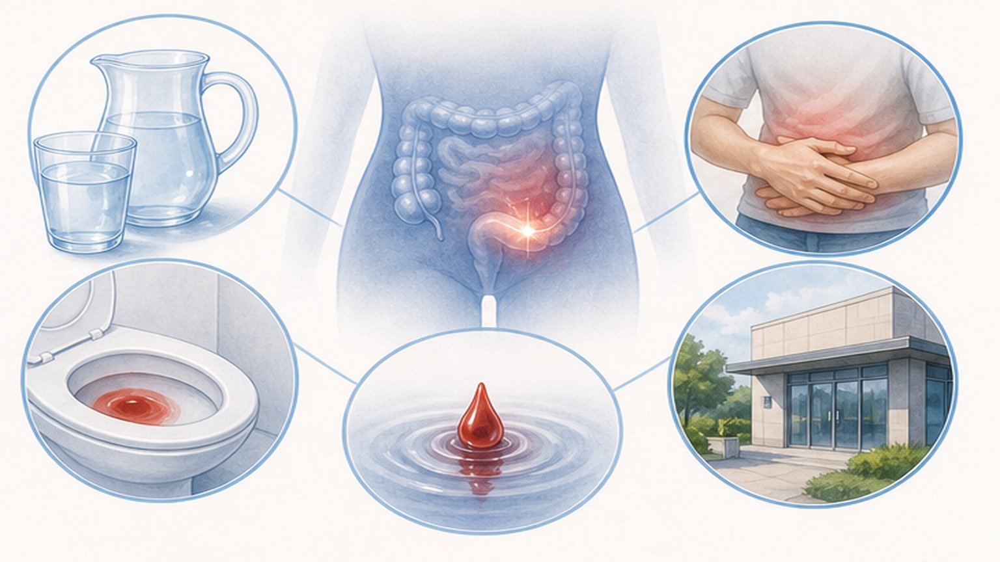

용종 절제술 후,
안전하게 회복하는 길
대장 용종 절제술 (Polypectomy) 이후 식이·활동·출혈 관찰·추적 검사 안내
지연성 출혈은 시술 당일이 아니라 3–7일에 집중됩니다
시술 후 최대 2주까지 자가 관찰 — 퇴원했다고 끝이 아닙니다
용종 절제술 (Polypectomy) 이란
대장 내시경 중 용종을 잘라내는 표준 시술 — 회복은 보통 빠르지만 관찰 기간은 깁니다
대장 점막에서 자라난 용종(Polyp)을 올가미·집게·열로 잘라내어 대장암으로 진행하기 전에 제거하는 시술입니다.
대부분의 환자는 시술 직후 회복실에서 2–4시간 안정 후 식사를 시작할 수 있을 만큼 회복이 빠릅니다. 다만 절제 부위는 작은 상처로 남아 있어 점막이 완전히 아물기까지는 보통 1–2주가 걸립니다. 이 기간 동안 출혈·천공 같은 합병증이 늦게 나타날 수 있어 본 자료의 안내가 필요합니다.
시술 후 식이는 단계적으로 진행하세요
최신 RCT 결과 — 무리한 3–5일 금식보다 조기 식이가 회복에 더 안전합니다

음식, 무엇을 주의하고 무엇은 괜찮은가
씨앗·견과·잡곡·해조류 1–2주 일괄 금지는 근거가 부족합니다 — 핵심은 "초기 자극 회피"
활동 제한, 짧고 명확하게
"1–2주 일괄 제한"은 근거가 약합니다 — 핵심은 초기 48–72시간 격렬 활동 회피 (3–7일)

약은 임의로 끊지도, 임의로 다시 시작하지도 마세요
항혈전제·진통제는 의료진의 개별 지시에 따릅니다 — 무조건 1주 중단은 오히려 위험할 수 있습니다

경미한 출혈 vs 위험한 출혈, 구별 포인트
소량 핏기는 흔하지만, 아래 신호는 즉시 응급실 — 둘을 구분하는 법을 익혀두세요
- 변에 핏줄·핏기가 한두 줄 묻은 정도
- 한두 번 발생하고 더 이상 지속되지 않음
- 어지럼증·식은땀·복통이 동반되지 않음
- 혈압·맥박이 평소 범위로 안정적
- 색이 선홍색이지만 양이 매우 적음
- 휴지에만 살짝 묻고 변기 물은 맑은 정도
- 변기 물이 새빨갛게 물드는 다량의 혈변
- 검은 자장면 같은 흑색변(상부 출혈 가능)
- 혈변이 반복되거나 양이 점점 늘어남
- 어지럼증·식은땀·실신·창백
- 맥박이 빨라짐(빈맥)·혈압 저하
- 새로 생긴 심한 복통·복부 팽만·딱딱함
집에서의 자가 관리법
시술 후 1–2주, 회복과 출혈 예방을 위해 지킬 것과 피할 것
- 회복실에서 증상 없으면 물부터 천천히 시작
- 충분한 수분으로 변비를 막아 복압 상승 예방
- 매일 변 색깔·양·증상을 자가 점검 (최소 2주)
- 가벼운 보행·일상 활동은 다음날부터 정상화
- 처방받은 위장 보호제·항혈전제는 지시대로 복용
- 퇴원 시 받은 응급 연락처를 항상 가까이 보관
- 48–72시간 내 격렬한 운동·등산·골프·헬스
- 무거운 물건 들기·복압 올리는 동작
- 매운 음식·과음·진한 커피 (초기 24–48시간)
- 임의로 항혈전제 중단 (혈전 위험 증가)
- NSAIDs 진통제(이부프로펜·낙센 등) 자가 복용
- "별일 아니겠지" 하며 혈변 신고 미루기

이럴 때는 즉시 응급실로
시술 후 합병증의 명확한 위험 신호 — 한 가지라도 해당되면 지체 없이 119
조직 검사 결과에 따라 다음 대장 내시경 시기가 결정됩니다
광교바른내과 추적 기준 — 용종·선종 유무 및 위험도에 따른 추적 검사 간격
잘 회복하시는 길은
관찰과 기록입니다
혈변·복통·발열 등 변화가 있으면 언제든 연락 주세요 — 함께 안전하게 회복합니다
광교중앙로 298, 4층
토요일 08:30~13:30
같은 자료를 다시 볼 수 있어요